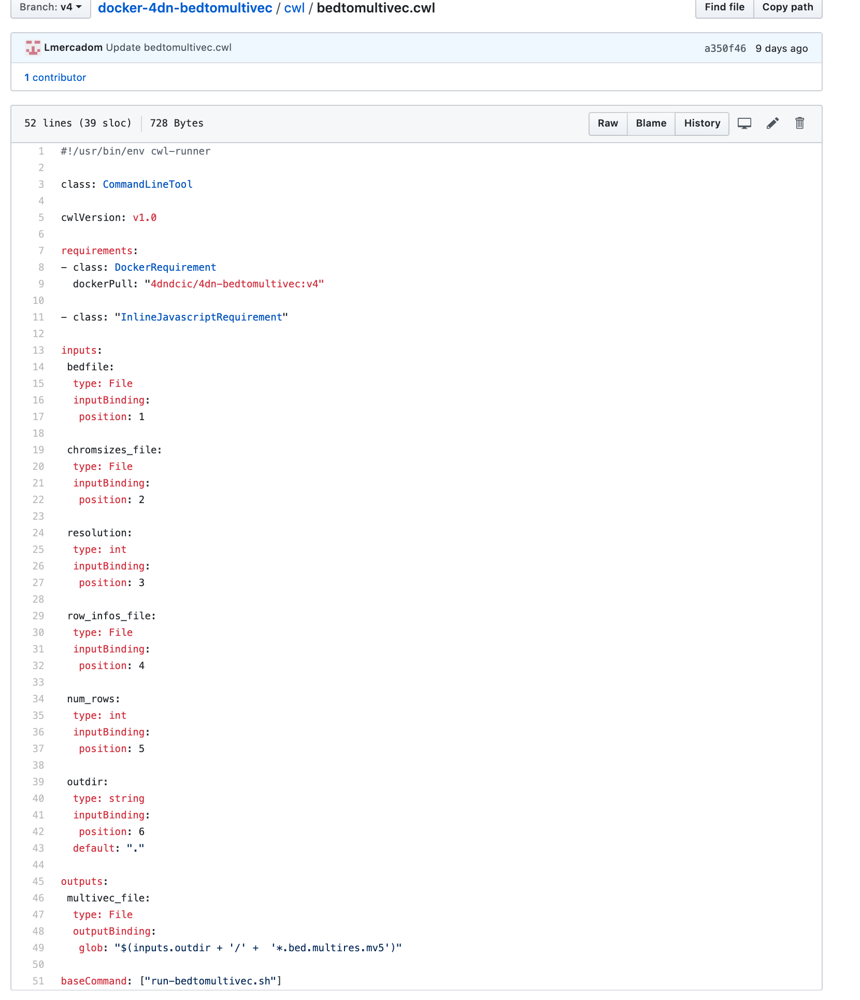

Overview¶
There are several steps for developing and implementing pipelines in the 4DN data portal. The pipeline structure consists of a docker image containing the scripts, software and packages necessary to run all processes on a desired input data. A cwl file that contains the instructions to run those processes step by step. A workflow object representing the pipeline in the data portal. A foursight check that runs the pipeline on specific files on the portal and with specific computer resources (benchmarking) using tibanna.
These are the following stages of the pipeline development:
Pipeline GitHub Repository:
All the pipelines have their own GitHub Repo containing the information of the docker and cwl file(s) and tests
-Dockerization -CWL pointing to the docker -Travis Testing to ensure it is working how it is supposed to
Data Portal:
The pipeline object and other related objects such as file formats are transferred to the data portal and the computing resources necessary to run them on the data in the portal are assessed
-Workflow Object and Related Objects -Tibanna benchmarking
Foursight:
The conditions and inputs in which the pipeline is going to be run are defined.
-Configure pipeline run (metadata, files, query) -Run pipeline
Overview Image:
